|
|
|
Leathery
anemone
Radianthus crispa
Family Stichodactylidae
updated
Jul 2024
Where
seen? This large anemone is sometimes seen on the reef edges of our Southern shores. According to Dr Fautin, it is sometimes seen living on branching
corals. It was previously known as Heteractis cripsa.
Features: Diameter
expanded 20-30cm, up to 50cm when fully expanded. Many long tentacles
(about 10cm) that are snake-like, evenly tapered to a point often
with coloured tips: mauve, blue, sometimes yellow or green. The tentacles
may shrivel if the animal is disturbed. Body column with large, prominent,
adhesive bumpy verrucae. The body column texture is leathery and it
is uniformly coloured, usually grey. The oral disk is usually brownish violet or grey, rarely bright green,
sometimes with white stripes.
Sometimes confused with other
large sea anemones and similar large cnidarians. Here's more on how
to tell apart large sea anemones with long
tentacles and large 'hairy'
cnidarians.
Leathery
friends: The Leathery anemone harbours symbiotic algae
(called zooxanthellae) that photosynthesize. The algae share the food
produced with the anemone, which in turn provides the algae with shelter
and minerals. Several kinds of animals may live happily among and
unharmed by the tentacles of the anemone. These include the Peacock-tail anemone shrimp (Periclimenes brevicarpalis) and fishes
such as Dascyllus trimaculatus and many species of anemonefishes.
Status and threats: As at 2024, it is listed as Endangered in Singapore. |

Beting Bemban Besar, Apr 10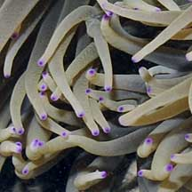
Tentacles may have coloured tips |
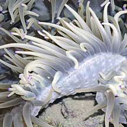

Typical bumpy prominent verrucae
on the body column. |
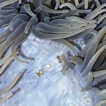
An anemone shrimp was seen in this one. |
| Leathery
anemones on Singapore shores |
| Other sightings on Singapore shores |
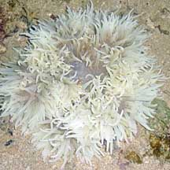
Bleaching.
Kusu Island,
Jun 10
Photo
shared by Loh Kok Sheng on his
blog. |
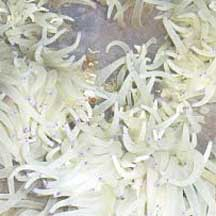
Kusu Island,
Jun 10
Photo
shared by Loh Kok Sheng on his
blog. |
 Kusu Island,
May 10
Kusu Island,
May 10
Photo
shared by Marcus Ng on his
flickr. |
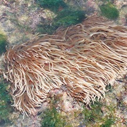
Pulau Jong, Jun 12
Photo shared by Loh Kok Sheng on his
blog. |
|
|
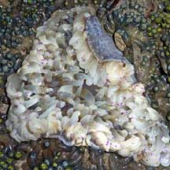
Bleaching
Pulau Tekukor, May 10
Photo shared by Loh Kok Sheng on his
blog.
|
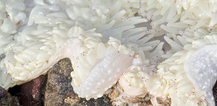
Bleaching.
Pulau Tekukor, Jun 16
Photo shared by Loh Kok Sheng on facebook.
|
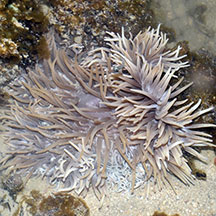
Pulau Hantu, May 19
|
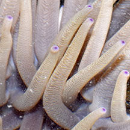
Photo shared by Loh Kok Sheng on facebook. |
|
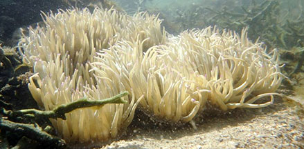
Pulau
Semakau, Jul 20
Photo shared by Loh Kok Sheng on facebook. |
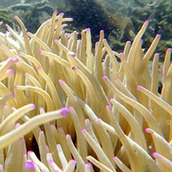
Pulau
Semakau, Jul 20 |
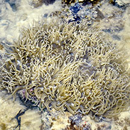
Pulau Semakau East, Jun 25
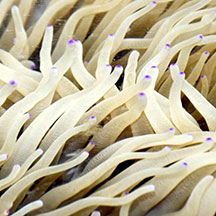
Photo shared by Loh Kok Sheng on facebook. |
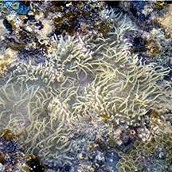
Pulau Semakau East, Jun 25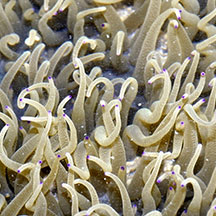
Photo shared by Loh Kok Sheng on facebook. |
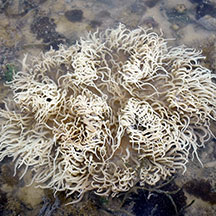
Pulau Semakau East, Jun 25
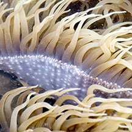
Photo shared by Loh Kok Sheng on facebook. |
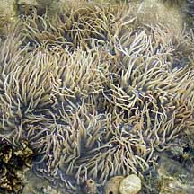
Pulau Semakau, Aug 07
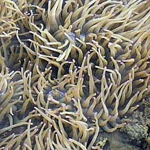
Photo shared by Loh Kok Sheng on his
flickr. |
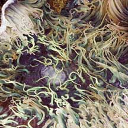
Pulau Semakau, Jan 09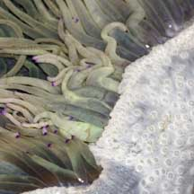
Photo shared by Marcus Ng. |
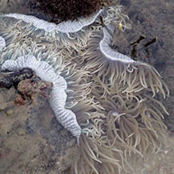
Pulau Semakau (North), Jun 18
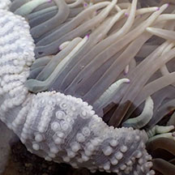
Photo shared by Liz Lim on facebook. |
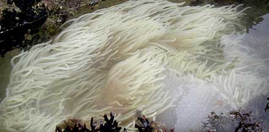
Bleaching.
Terumbu Semakau, Jun 10
Photo shared by Toh Chay Hoom on her
blog. |
|
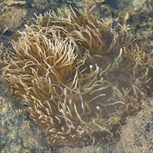
Terumbu Semakau, Jun 22
Photo shared by James Koh on facebook. |
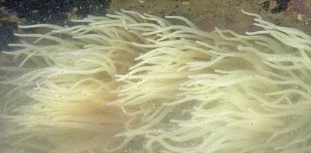
Terumbu
Semakau, Jun 10
Photo shared by Loh Kok Sheng on his
blog.
|
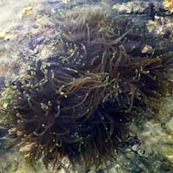
Terumbu Raya, Mar 09
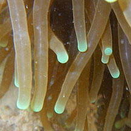
Photo shared by Loh Kok Sheng on his
flickr. |
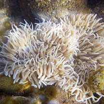
Terumbu Raya, Jun 15
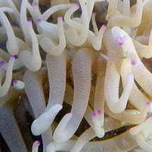
Photo shared by Loh Kok Sheng on his blog. |
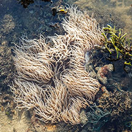
Terumbu Raya, May 24
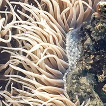
Photo shared by Jonathan Tan on faceook |
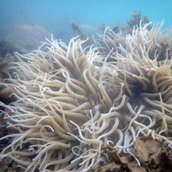
Terumbu Raya, Feb 23
Photo shared by Loh Kok Sheng on facebook. |
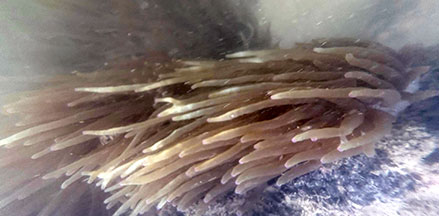
Terumbu Bemban, Aug 25
Photo shared by Lon Voon Ong on facebook. |
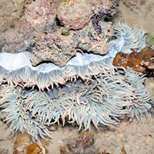
Terumbu Bemban, Jul 11
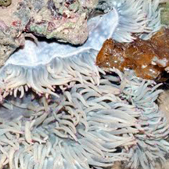
Photo shared by Loh Kok Sheng on his blog. |
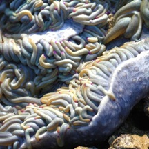
Terumbu Bemban, Apr 11

Photo shared by Russel Low on facebook. |
|
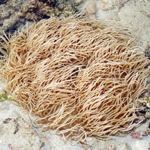
Beting Bemban Besar, May 11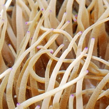
Photo shared by Loh Kok Sheng on his
blog. |
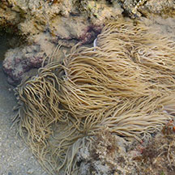
Beting Bemban Besar, Mar 20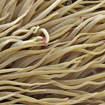
Photo shared by Abel Yeo on facebook. |
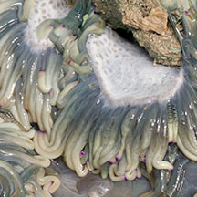
Beting Bemban Besar, May 10
Photo shared by Marcus Ng on flickr. |
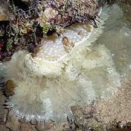
Pulau Senang, Jun 10
|
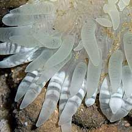
Photo shared by Loh Kok Sheng on his
flickr. |
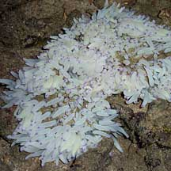
Pulau Senang, Jun 10
Photo shared by Loh Kok Sheng on his
flickr. |
Links
References
- Checklist of Cnidaria (non-Sclerectinia) Species with their Category of Threat Status for Singapore by Yap Wei Liang Nicholas, Oh Ren Min, Iffah Iesa in G.W.H. Davidson, J.W.M. Gan, D. Huang, W.S. Hwang, S.K.Y. Lum, D.C.J. Yeo, May 2024. The Singapore Red Data Book: Threatened plants and animals of Singapore. 3rd edition. National Parks Board. 663 pp.
- Daphne Gail Fautin, S. H. Tan and Ria Tan. Dec 2009. Sea anemones
(Cnidaria: Actiniaria) of Singapore: abundant and well-known shallow-water
species. The Raffles Bulletin of Zoology. Pp. 121-143.
|
|
|